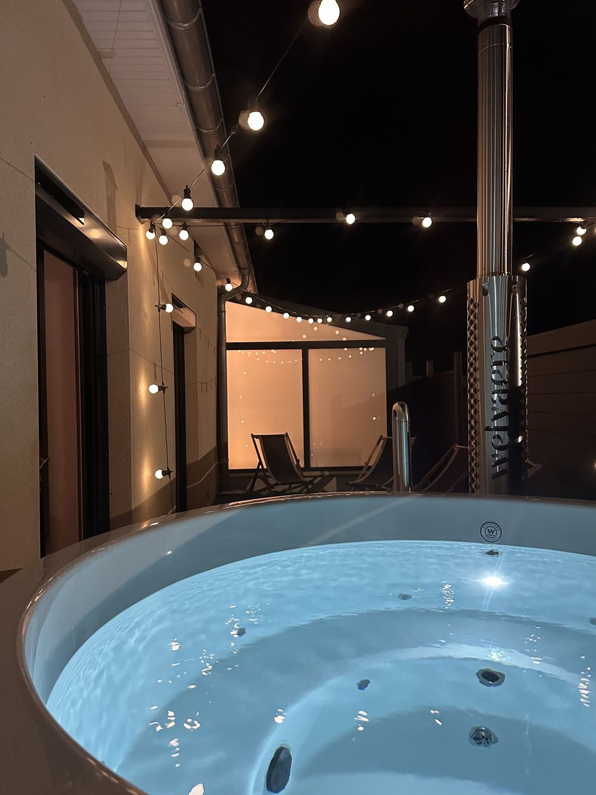
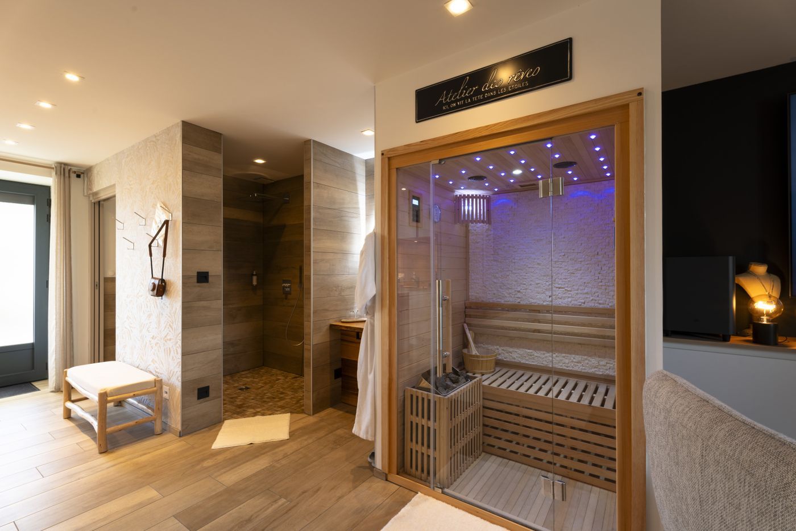

« Que dire de ce logement à part qu’il n’y a rien à dire… Tout est parfait et magnifique. »
★★★★★4,9sur Google · 210 avis
Domaine du Moulin, spa et mini-ferme en Bourgogne
Trois hébergements avec leur spa, au milieu des chevaux et des chèvres, à Saint-Laurent-d’Andenay : à 10 minutes de la gare TGV du Creusot et 30 minutes de Chalon-sur-Saône.
- Un spa privéchauffé toute l’année
- La mini-fermechevaux, chèvres, poules
- Piscines privéesface à la campagne
- Gare TGVà 10 minutes
Les hébergements
Trois cocons, trois spas
 01À deux
01À deux
La Suite Spa
45 m² · 2 personnes · dès 190 € la nuit
Une baignoire spa XXL au pied du lit, un sauna, une douche ciel de pluie et un lit qui semble flotter.
Voir la Suite 02La cabane
02La cabane
La Cachette Spa
20 m² · 2 à 4 personnes · dès 75 € la nuit
Une cabane en bois avec son écran de cinéma, sa terrasse couverte et son spa en option.
Voir la Cachette 03En famille
03En famille
Le Lodge Spa
65 m² · 1 à 8 personnes · dès 70 € la nuit
Deux chambres, un lit camion de pompier, une cuisine et un jacuzzi sur la terrasse en option.
Voir le LodgeBesoin de plus de place, d’un séjour pro ou de venir avec votre chien ? Nos annexes du Creusot et de Montchanin Comparer les hébergements
Spa et piscines
Un spa à vous, été comme hiver
Chaque hébergement a son spa privé, à l’abri des regards, chauffé entre 35 et 40 °C toute l’année.
- La Suite Spa
Une baignoire spa XXL au pied du lit et un sauna, compris dans la nuit.
- La Cachette Spa
Un spa sur la terrasse couverte, sous les guirlandes, en option à 50 € la nuit.
- Le Lodge Spa
Un jacuzzi sur la terrasse, pour toute la famille, en option à 50 € la nuit.
- Les piscines privées
Inspirées des bassins de cow-boys : on s’y rafraîchit face aux prés plutôt qu’on n’y nage. Elles sont entièrement réservées à votre séjour.




La mini-ferme
Le domaine en un coup d’œil
Entre les hébergements vivent les animaux du domaine, avec un potager et un verger. On pique-nique face aux prés, on joue à la pétanque, les enfants filent à la zone de jeux.
- Pétanque
- Pique-nique
- Brasero et barbecue
- Zone de jeux
- Tout le domaine

 Les chevauxet les poneys, qui viennent à la barrière
Les chevauxet les poneys, qui viennent à la barrière Les chèvresles plus curieuses du domaine
Les chèvresles plus curieuses du domaine Les moutonsdans le pré, autour de la 4L
Les moutonsdans le pré, autour de la 4L Les poulesen liberté dans la basse-cour
Les poulesen liberté dans la basse-cour
 Carte cadeau
Carte cadeau
Offrir un séjour
Offrir une parenthèse au domaine
Pour un anniversaire, un mariage, la Saint-Valentin ou simplement pour faire plaisir : une nuit avec spa privé, au milieu des animaux.
- Le Lodge Spaen famille, jusqu’à 8dès 150 €
- La Cachette Spaune nuit avec spa privédès 200 €
- La Suite Spaune nuit avec spa et saunadès 240 €
Vos hôtes
Sandra et Rémy
Arrivée en toute autonomie, mais jamais seuls : Sandra reste joignable par message ou par téléphone pendant tout le séjour, discrète et toujours à l’écoute.
- ★★★★★
Merci Sandra pour votre accueil, on repart ressourcé, déconnecté et reposé.
Mélanie L., sur Tripadvisor - ★★★★★
Très réactif et très à l’écoute. Rien de négatif.
Valérie M., sur Tripadvisor - ★★★★★
Nous avons apprécié le confort et l’accueil personnalisé selon nos goûts.
Marjolaine B., sur Tripadvisor
En images
Le domaine au fil du jour
Ils sont venus
Ce qu’en disent nos voyageurs
« La suite, c’est une parenthèse hors du temps incroyable, un confort inégalé, un repos fantastique. »
« Spa et sauna privatifs, un réel coup de cœur. Planche gourmande le soir et petit déjeuner copieux : on s’est régalé. »
« Un accueil chaleureux dans un lieu unique et hors du temps. Le jacuzzi et le sauna sont tops. »
« Le grand extérieur et les animaux sont un plus pour les enfants : notre fille demande déjà à y revenir. »
« Un superbe endroit où se ressourcer dans un lieu où tout est prévu pour se sentir bien. »
« Une propreté irréprochable. Un cadre extérieur calme et paisible. »
« Excellente expérience, tout était vraiment top, les petites attentions étaient merveilleuses. »
« Les petits animaux sont trop mignons : c’est vraiment le petit plus. »
Autour du domaine
Toute la région
Les activités à voir

L’abbaye de Cluny
À 45 minutes
Les vignes de Mercurey
La Côte chalonnaise, à 30 minutes
Le canal du Centre
À vélo, à 7 minutes
Les Hospices de Beaune
À 50 minutes
Chalon-sur-Saône
Les quais de la Saône, à 30 minutes
Paray-le-Monial
La basilique, à 40 minutes
Mont-Saint-Vincent
Le village perché, à 20 minutes
Votre parenthèse commence ici
Un week-end à deux, des vacances en famille ou une surprise à offrir : choisissez vos dates, Sandra s’occupe du reste.
Réserver en ligne
Réserver en ligne
Vos dates, en direct
Choisissez vos dates sur le planning : vous voyez tout de suite ce qui est libre et le prix de votre séjour, taxe de séjour comprise, sans frais de plateforme.
Une surprise à préparer ? Écrivez à Sandra
- 1Vos datesle planning est à jour, les dates prises sont fermées
- 2Votre hébergementla Suite, la Cachette ou le Lodge
- 3Vos optionsle spa, un départ tardif
- 4Vos coordonnéesla demande arrive chez Sandra
Questions fréquentes
Avant de réserver
Comment réserver ?
En ligne, avec le bouton « Réserver » : vous choisissez vos dates sur le planning, votre hébergement et vos options (spa, départ tardif). Le prix du séjour s’affiche aussitôt, taxe de séjour comprise. Vous pouvez aussi appeler Sandra au 06 16 02 31 24.
Le spa est-il compris ?
Dans la Suite Spa, oui : la baignoire spa XXL et le sauna sont dans la suite. À la Cachette et au Lodge, le spa de la terrasse est en option, 50 € la nuit, chauffé entre 35 et 40 °C toute l’année : réservez-le à l’avance pour qu’il soit prêt à votre arrivée.
À quelle heure arrive-t-on ?
L’arrivée est autonome à partir de 17 h : la procédure pour récupérer les clés vous est envoyée le jour de votre arrivée. Le départ se fait à 11 h (10 h au Lodge). Un départ tardif jusqu’à 14 h est possible pour 50 €.
Peut-on venir avec les enfants ?
Oui, à la Cachette (2 adultes et 2 enfants) et au Lodge (jusqu’à 8, avec un lit camion de pompier et un lit bébé). La Suite Spa est réservée aux couples. Les enfants adorent la mini-ferme et la zone de jeux des dépendances.
Peut-on prendre le petit déjeuner sur place ?
Oui, sur demande et en supplément : il est servi directement dans votre logement. Des formules dîner, des massages et des décorations sur mesure (pétales de roses, champagne, ballons) sont aussi proposés.
Les animaux de compagnie sont-ils admis ?
Pas dans les hébergements du domaine, qui sont aussi non-fumeurs. Nos annexes du Creusot et de Montchanin, elles, accueillent les animaux : appelez-nous pour en parler.
Peut-on offrir un séjour ?
Oui : la carte cadeau numérique est envoyée gratuitement par e-mail, la carte artisanale par courrier pour 5 €. Le coffret cadeau comprend le logement et les options choisies, avec ou sans dates ; le chèque cadeau a le montant de votre choix.